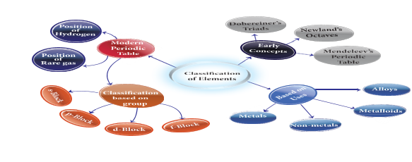

1. If Dobereiner is related with ‘law of triads’, then Newlands is related with
A bracket closed Modern periodic law b bracket closed Hund’s rule
C bracket closed Law of octaves d bracket closed Pauli’s Exclusion principle
2. Modern periodic law states that the physical and chemical properties of elements are the periodic functions of their
A bracket closed atomic numbers b bracket closed atomic masses c bracket closed similarities d bracket closed anomalies
3. Elements in the modern periodic table are arranged in dash groups and dash periods.
A bracket closed 7, 18
b bracket closed 18, 7
c bracket closed 17, 8
d bracket closed 8, 17
1. In Dobereiner’s triads, the atomic weight of the middle element is the dash of the atomic masses of first and third elements.
2. Noble gases belong to dash group of the periodic table.
3. The basis of the classifications proposed by Dobereiner, Newlands and Mendeleev was dash
4. Example for liquid metal is dash
Triads |
Newlands |
Alkali metal |
Calcium |
Law of octaves |
Henry Moseley |
Alkaline earth metal |
Sodium |
Modern Periodic Law |
Dobereiner |
1. Newlands’ periodic table is based on atomic masses of elements and modern periodic table is based on atomic number of elements.
2.Metals can gain electrons.
3. Alloys bear the characteristics of both metals and non metals.
4. Lanthanides and actinides are kept at the bottom of the periodic table because they resemble each other but they do not resemble with any other group elements.
5. Group 17 elements are named as Halogens.
Statement: Elements in a group generally possess similar properties but elements along a period have different properties.
Reason: The difference in electronic configuration makes the element differ in their chemical properties along a period.
A bracket closed Statement is true and reason explains the statement.
B bracket closed Statement is false but the reason is correct.
1. State modern periodic law.
2. What are groups and periods in the modern periodic table question mark
3. What are the limitations of Mendeleev's periodic table question mark
4. State any five features of modern periodic table.
1. CONCISE Inorganic chemistry 5th Edition by J.D. Lee
2. Inorganic Chemistry by P.L.Soni
3. The Periodic table: Its story and its significance: Eric R. Scerri
2. https://iupac.org/what-we-do/periodictable-of-elements/
4.https://sciencestruck.com/periodic-table facts
5. https://ww.teachbeside.com/memorizeperiodictable

Periodic Classification
Steps
1.Type the URL link given below in the browser OR scan the QR code .You can also download the “Royal society of chemistry” mobile app from the given app URL.
2. Click the element from the table and explore the properties of the element you want to learn.
3. On the right top corner click option as shown to learn the uses and properties.
4. For every element we can understand the uses and the properties of elements.
URL: https://play.google.com/store/apps/detailsquestion markid=org.rsc.periodictable or Scan the QR Code.